Astrology Grimoire
Astrology
- 1st House
- 2nd House
- 3rd House
- 4th House
- 5th House
- 6th House
- 7th House
- 8th House
- 9th House
- 10th House
- 11th House
- 12th House
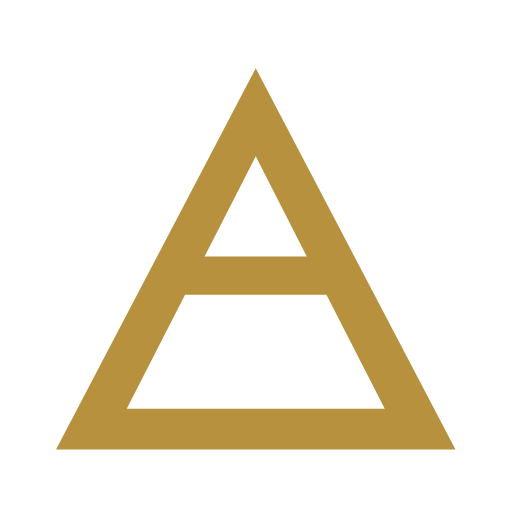
Air Signs Aldebaran
Aldebaran- Alder
 Algol
Algol Aquarius
Aquarius Aries
Aries Arturus
Arturus- Ash
- Aurora Borealis
- Birch
- Black Moon
 Blood Moon
Blood Moon Blue Moon
Blue Moon Cancer
Cancer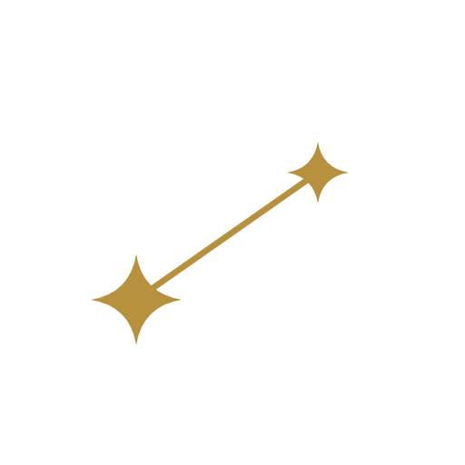
Canis Minor Capricorn
Capricorn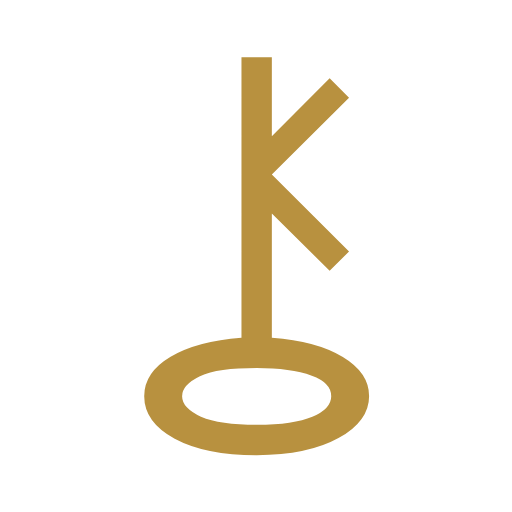
Chiron- Comet
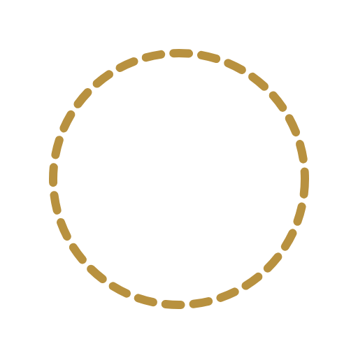
Dark Moon- Earth Signs
- Elder
 Elpheia
Elpheia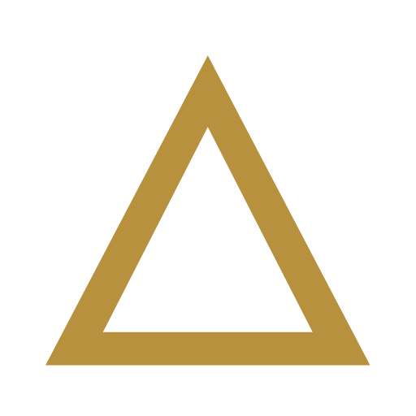
Fire Signs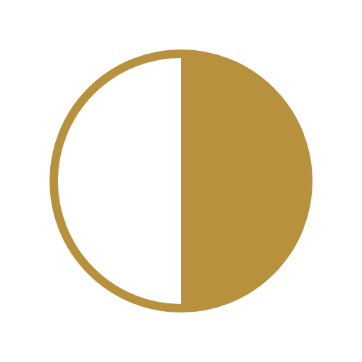
First Quarter Moon Full Beaver Moon
Full Beaver Moon Full Buck Moon
Full Buck Moon Full Cold Moon
Full Cold Moon Full Corn Moon
Full Corn Moon Full Flower Moon
Full Flower Moon Full Hunter’s Moon
Full Hunter’s Moon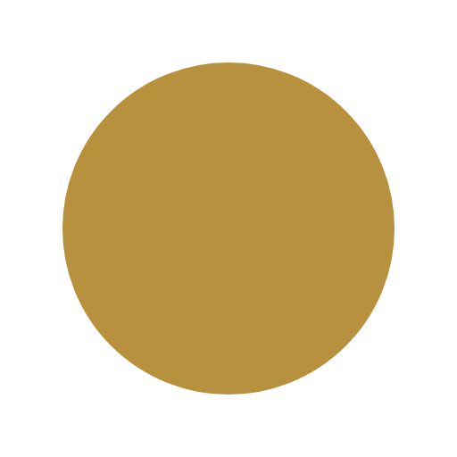
Full Moon Full Pink Moon
Full Pink Moon Full Snow Moon
Full Snow Moon Full Strawberry Moon
Full Strawberry Moon Full Sturgeon Moon
Full Sturgeon Moon Full Wolf Moon
Full Wolf Moon Full Worm Moon
Full Worm Moon Gemini
Gemini Goat Star
Goat Star Harvest Moon
Harvest Moon- Hawthorn
- Hazel
 Heart of the Lion
Heart of the Lion Heart of the Scorpion
Heart of the Scorpion- Holly
- Ivy
 Jupiter
Jupiter Leo
Leo Libra
Libra- Lilith
- Lunar Eclipse
 Mars
Mars Mercury
Mercury- Micromoon
 Milky Way
Milky Way Moon
Moon- Moon in Aquarius
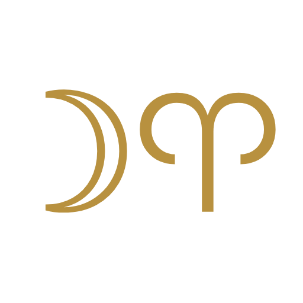
Moon in Aries- Moon in Cancer
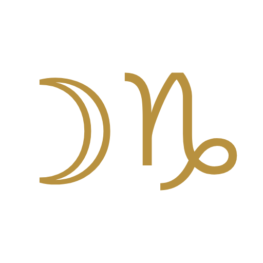
Moon in Capricorn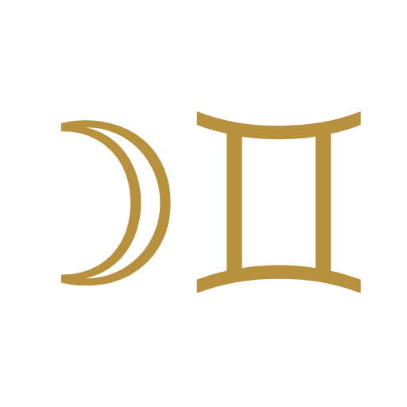
Moon in Gemini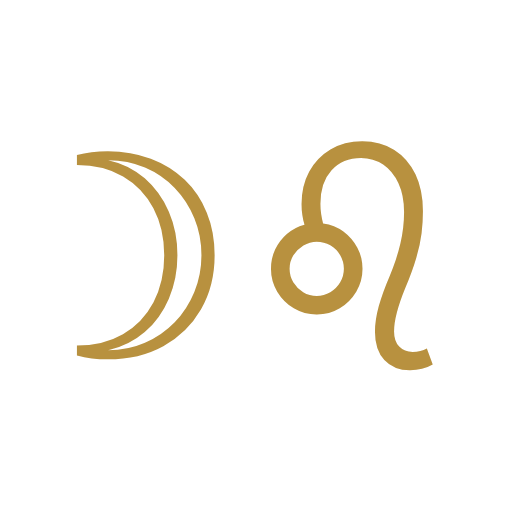
Moon in Leo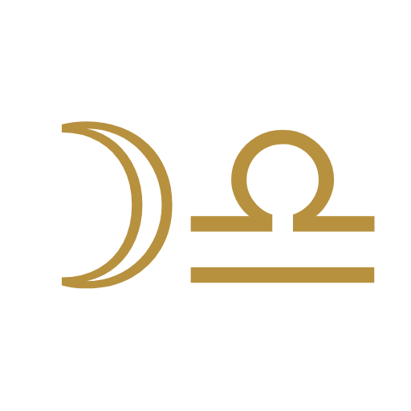
Moon in Libra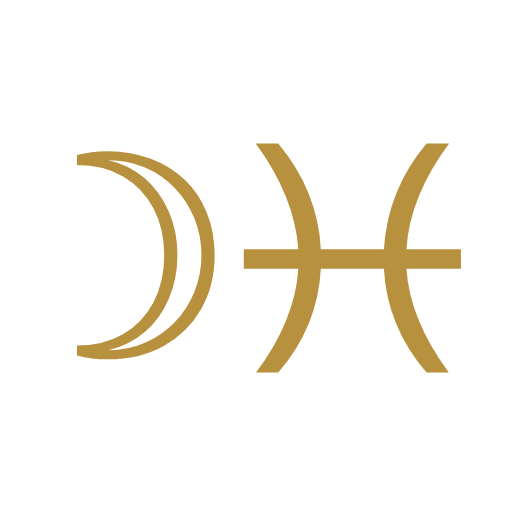
Moon in Pisces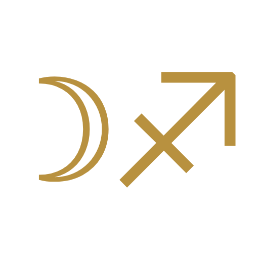
Moon in Sagittarius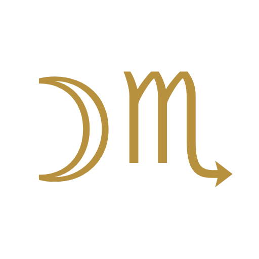
Moon in Scorpio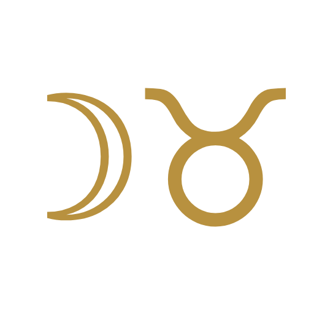
Moon in Taurus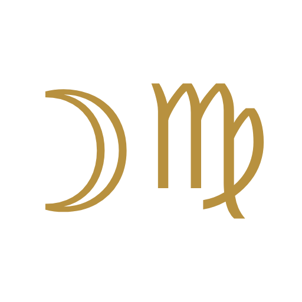
Moon in Virgo- Moon Void-of-Course
 Neptune
Neptune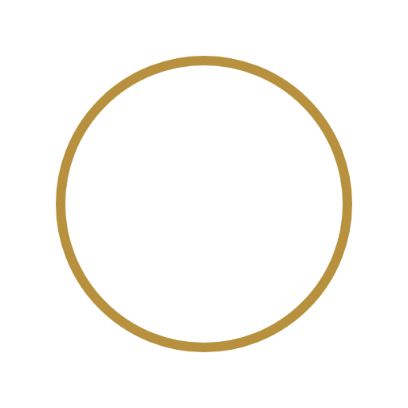
New Moon- North Node
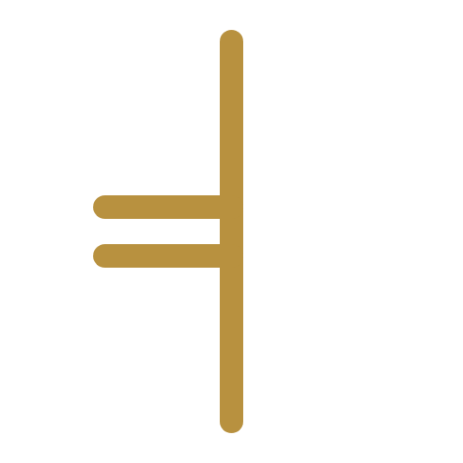
Oak Pisces
Pisces- Pleiades
 Pluto
Pluto Pole Star
Pole Star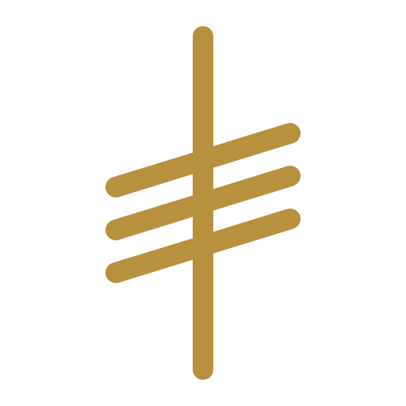
Reed- Rowan
 Sagittarius
Sagittarius Saturn
Saturn Scorpio
Scorpio- Sirius
- Solar Eclipse
 South Node
South Node Spica
Spica Stars
Stars Sun
Sun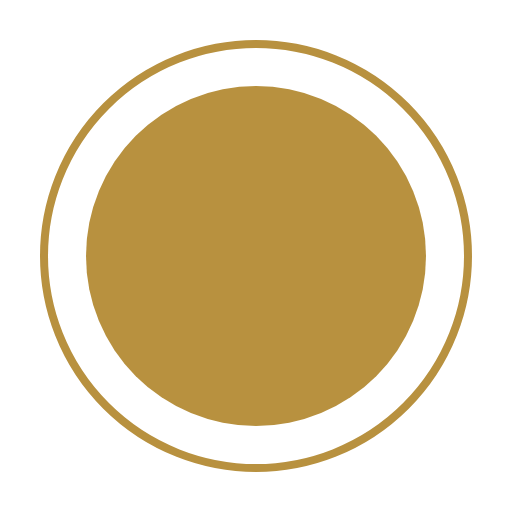
Supermoon Tail of Capricorn
Tail of Capricorn Tail of the Bear
Tail of the Bear Taurus
Taurus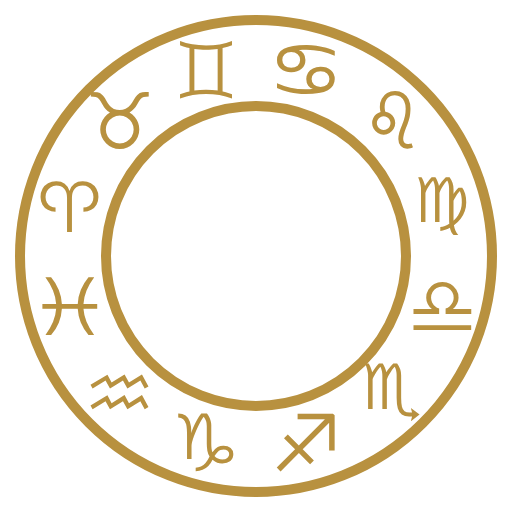
The Zodiac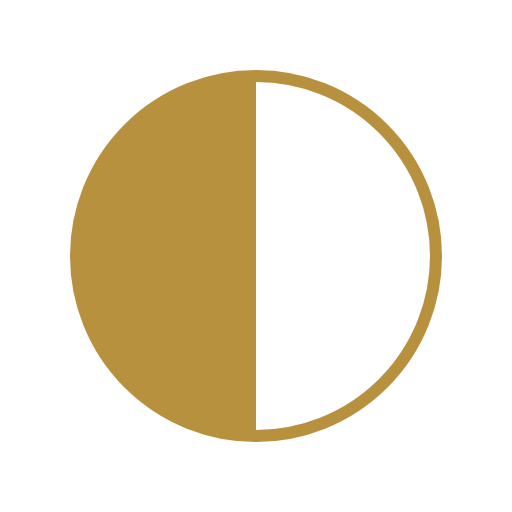
Third Quarter Moon True Node
True Node Uranus
Uranus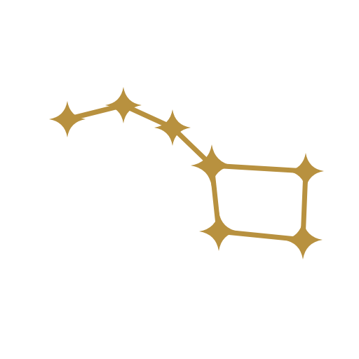
Ursa Major Venus
Venus- Vine
 Virgo
Virgo Vulture Falling
Vulture Falling- Waning Crescent Moon
- Waning Gibbous Moon
- Water Signs
- Waxing Crescent Moon
- Waxing Gibbous Moon
- Willow
 Wing of the Crow
Wing of the Crow- Year of the Dog
- Year of the Dragon
- Year of the Horse
- Year of the Monkey
- Year of the Ox
- Year of the Pig
- Year of the Rabbit
- Year of the Rat
- Year of the Rooster
- Year of the Sheep
- Year of the Snake
- Year of the Tiger